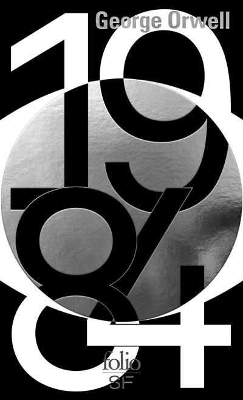
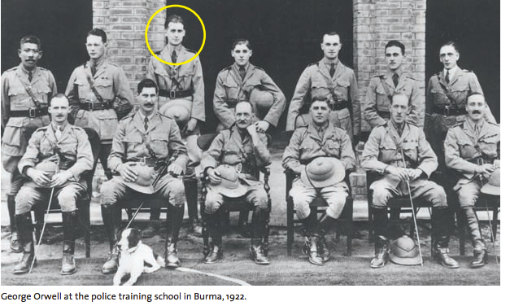
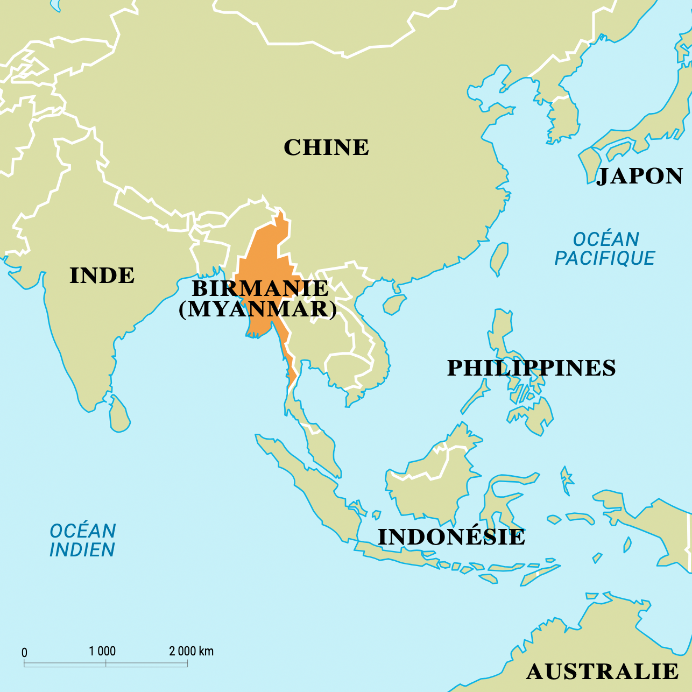
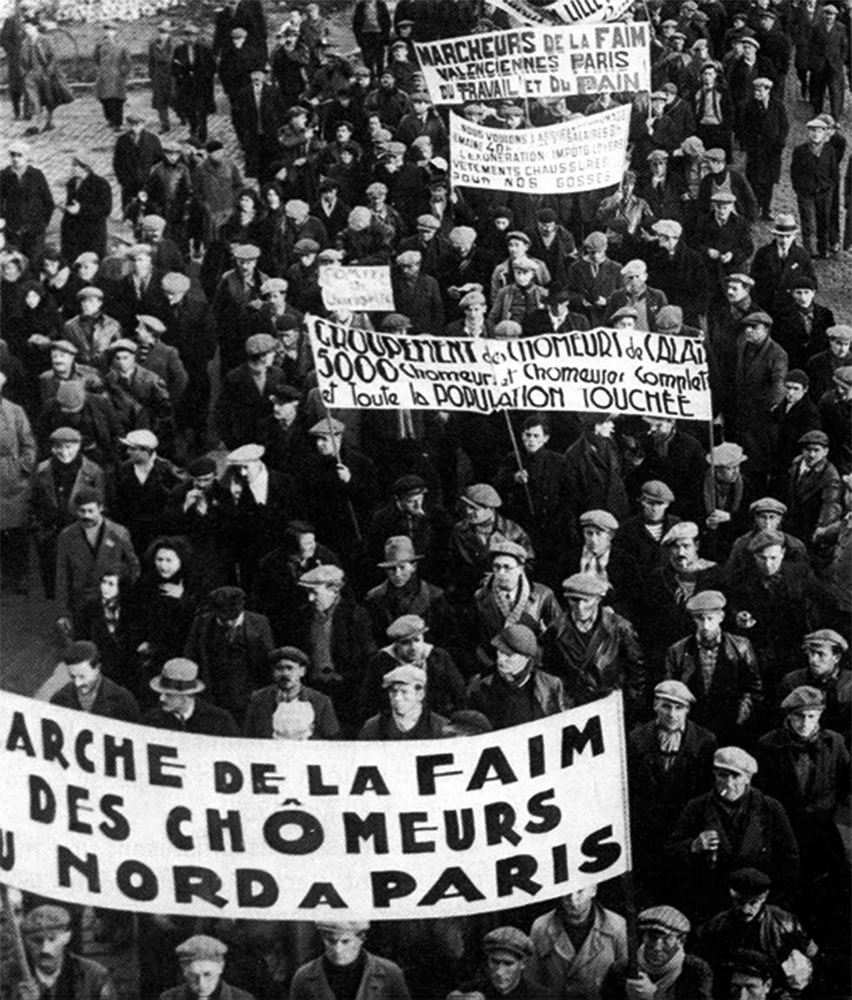
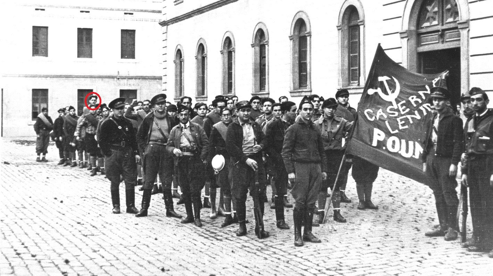
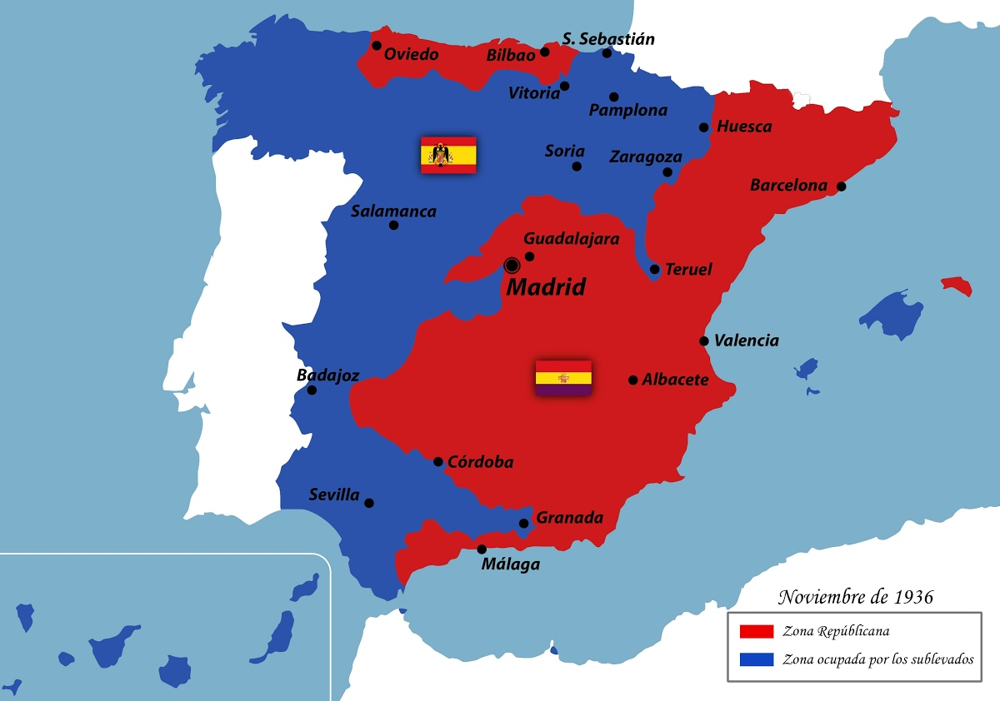
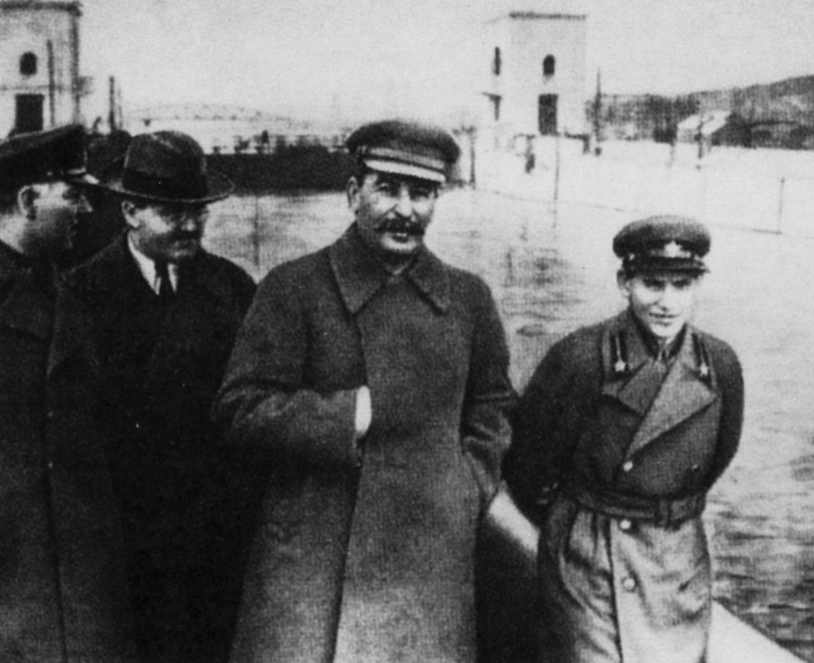
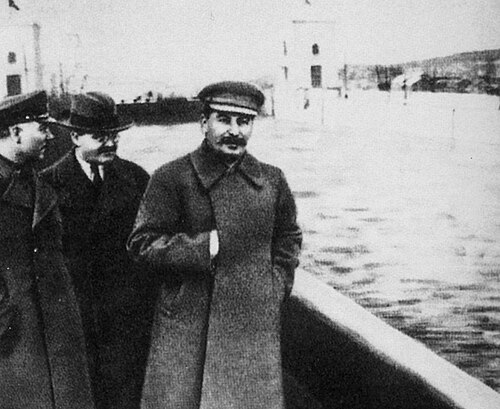
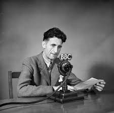
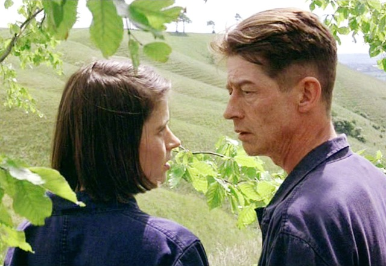

Clic ou molette pour zoomer · glisser pour déplacer · Échap / clic au fond pour fermer
Mois Orwell · exposé
Avant-propos
On vient d'en débattre tous ensemble, donc je ne vais pas refaire le tour du roman. Ce qui m'a vraiment passionné ce mois-ci, c'est plutôt le hors-champ. J'ai lu sa vie, ses essais, ses reportages, et à chaque fois j'avais l'impression de retrouver 1984 en germe, déjà là, avant même qu'il l'écrive.

L'édition que j'ai relue ce mois-ci.
Carte de lecture
Acte un
Birmanie, Paris, Londres, l'Aragon. Avant d'écrire la dystopie, Orwell est allé chercher le réel là où ça fait mal.
1922-1927 · Birmanie
À dix-neuf ans, Eric Blair (le pseudo « Orwell » viendra plus tard) part en Birmanie comme policier de l'Empire britannique. Pendant cinq ans, il est donc l'instrument de la domination coloniale, du côté de l'oppresseur. Il en revient profondément dégoûté.


Birmanie · Asie du Sud-Est (situation).

1928-1933 · Paris et Londres
Plongeur dans les cuisines parisiennes, vagabond sur les routes anglaises, et tout ça volontairement. Il ne veut pas observer la misère depuis la fenêtre, il veut la vivre par en dessous, pour de vrai.
1936-1937 · front d'Aragon
Quand la guerre éclate, la riposte antifasciste s'organise surtout en dehors de l'État, par les syndicats et les milices ouvrières. Orwell s'engage dans la milice du POUMPOUM : Parti ouvrier d'unification marxiste. Une milice marxiste antistalinienne, dans laquelle Orwell a combattu, et qui sera liquidée par les communistes en 1937. pour combattre Franco. Sur le front, une balle de sniper lui traverse le cou, à quelques millimètres de le tuer.
Et pourtant il en garde un souvenir doux-amer : le froid, l'ennui des tranchées, l'absurdité de tout ça, et le sentiment de n'avoir, au fond, pas vraiment pesé sur le cours des choses.

Orwell s'engage dans une milice ouvrière, sur le front d'Aragon.
Aparté · contexte
En juillet 1936, une partie de l'armée menée par Franco fait un coup d'État contre la République élue. Le pays se coupe en deux, et chaque camp s'appuie sur des soutiens étrangers.

L'Espagne coupée en deux, été 1936 (tracé simplifié).
La République et son gouvernement élu, les syndicats (CNTCNT : grand syndicat anarchiste, un des piliers de la résistance ouvrière en Espagne. anarchiste, UGT), les communistes, le POUM, et les Brigades internationalesBrigades internationales : volontaires venus du monde entier pour combattre aux côtés de la République (Orwell en fait partie, par le POUM).. Soutien : URSS, Mexique.
Une partie de l'armée, la PhalangePhalange : parti nationaliste d'extrême droite, allié de Franco., les monarchistes, une large part de l'Église. Soutien : Allemagne nazie, Italie fasciste.
Barcelone · mai 1937
Du jour au lendemain, les communistes staliniens se retournent contre le POUM, c'est-à-dire contre les camarades d'Orwell, et les accusent d'avoir comploté avec les fascistes. Les journaux sont réécrits. Ceux qui sont tombés au front deviennent des traîtres.


à droite, le commissaire Iejov …il n'a jamais existé.Sous Staline, on effaçait littéralement les disgraciés des photos officielles (Iejov, Trotski…). En savoir plus
Acte deux
Pour Orwell, la langue n'est jamais neutre. C'est un terrain de pouvoir, et une arme de précision.
L'écriture
Orwell s'entraînait à recopier des pages qu'il jugeait « pures », débarrassées de tout mot en trop. Son idéal, c'était une prose si transparente qu'on en oublie le verre pour ne voir que la chose elle-même.
« La politique et la langue anglaise »
Pour Orwell, une langue floue n'a rien d'innocent : c'est un outil du pouvoir. Si on réduit le vocabulaire, on rend certaines idées tout simplement impensables. De là vient le novlangueNovlangue : la langue officielle inventée par le Parti dans 1984. En supprimant des mots chaque année, elle cherche à rendre la dissidence littéralement impensable. : moins de mots chaque année, pour qu'un jour la révolte n'ait même plus les mots pour se dire.
Et il sait de quoi il parle : entre 1941 et 1943, il a lui-même travaillé à la BBC, à produire des émissions de guerre vers l'Inde. Il en ressort méfiant. On raconte que la cantine du Ministère de la Vérité et la fameuse Salle 101 viennent de souvenirs de couloirs de la BBC.

Écho contemporain
Clément Viktorovitch en fait carrément le diagnostic de notre époque. Dans Le Pouvoir rhétorique (2021), il montre que convaincre est un pouvoir, qui s'apprend et se déjoue. Dans Logocratie (2025), il décrit ce qui arrive quand le pouvoir vide les mots de leur sens : la post-véritéPost-vérité : situation où, dans le débat public, les faits comptent moins que l'appel aux émotions et aux croyances (ex. : des affirmations répétées même après avoir été démenties). s'installe, et la démocratie commence à vaciller.
Acte trois
Ce que cette seconde lecture, nourrie de tout le reste, m'a fait voir autrement.
Porte I · la mise en abymeMise en abyme : procédé où une œuvre s'enchâsse dans elle-même (un récit dans le récit, un tableau dans le tableau).
Au milieu du roman, Winston lit « le livre » de Goldstein, l'ennemi public numéro un, qui est clairement calqué sur Trotski. Son titre parodie même La Révolution trahie, un vrai bouquin de Trotski.
Porte II · le statut du réel
À la toute fin, l'enjeu n'est même plus politique, il devient philosophique. Pour bien voir ce qui se joue, deux familles d'idées, et un extrême.
Le réel existe en dehors de nous. Une pierre reste une pierre, que je la regarde ou non.
C'est l'esprit qui prime. Le monde n'existe que tel qu'une conscience le perçoit.
L'idéalisme poussé à l'extrême : rien n'existe en dehors de mon esprit. Tout le reste est peut-être une illusion.

Winston et Julia, un instant à l'abri des regards.
Porte III · l'intime
Dans un monde où le Parti met la main sur absolument tout, y compris les sentiments, le simple fait que Winston et Julia se désirent librement devient un acte politique. Et je trouve ça d'une beauté folle : ce n'est pas l'histoire d'amour en elle-même qui compte, c'est qu'il existe enfin un petit espace, intime, que le pouvoir n'arrive pas à atteindre.
Acte quatre
Le roman a plus de soixante-quinze ans. Le problème, lui, n'a pas pris une ride.
Raoul Peck · 2025
Le documentaire fait dire les textes d'Orwell par-dessus des images d'hier et d'aujourd'hui : fausses nouvelles, langue administrative qui noie tout, IA qui fabrique du faux, autoritarismes qui montent un peu partout. Le montage seul suffit à montrer que rien, chez Orwell, n'a pris une ride.
L'ironie finale
Cliquez pour déclassifier, un dossier après l'autre.
À vous, maintenant
Présentation co-rédigée avec Claude (Opus 4.8), à partir de mes notes et brouillons, pour les mettre au propre et en forme.